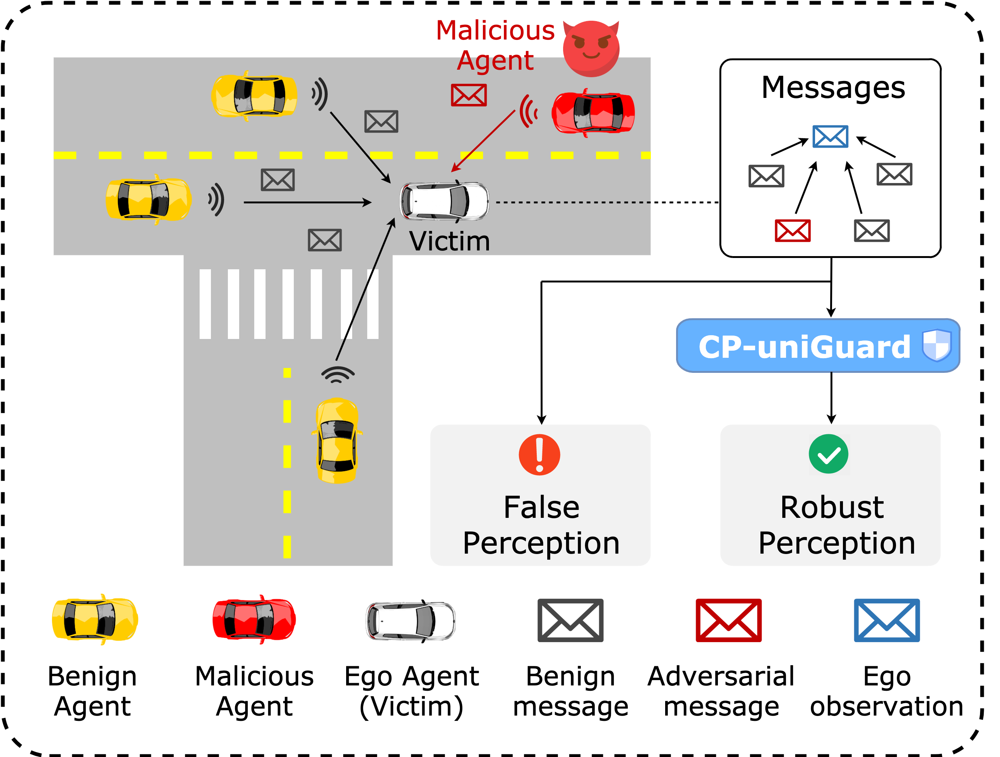
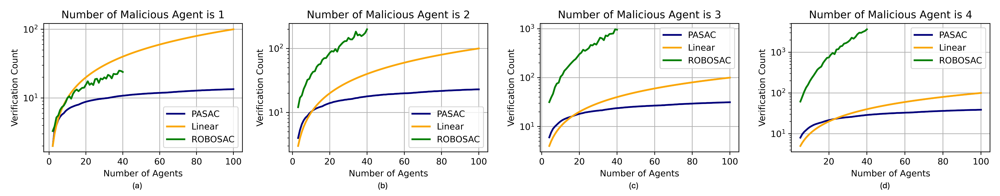
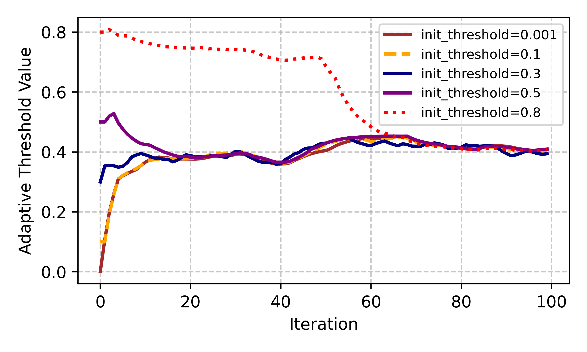
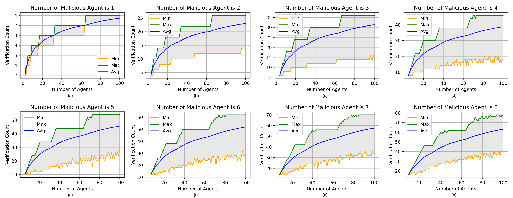
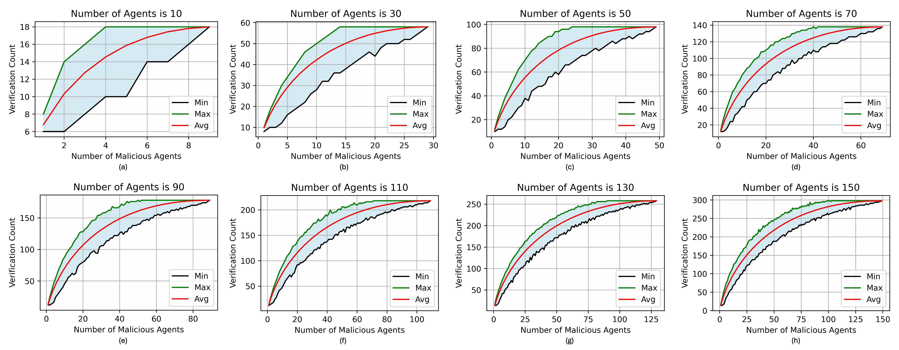

Contents
Abstract
Collaborative Perception (CP) has been shown to be a promising technique for multi-agent autonomous driving and multi-agent robotic systems, where multiple agents share their perception information to enhance the overall perception performance and expand the perception range. However, in CP, an ego agent needs to receive messages from its collaborators, which makes it vulnerable to attacks from malicious agents. To address this critical issue, we propose a unified, probability-agnostic, and adaptive framework, namely, CP-uniGuard, which is a tailored defense mechanism for CP deployed by each agent to accurately detect and eliminate malicious agents in its collaboration network.
Our key idea is to enable CP to reach a consensus rather than a conflict against an ego agent's perception results. Based on this idea, we first develop a probability-agnostic sample consensus (PASAC) method to effectively sample a subset of the collaborators and verify the consensus without prior probabilities of malicious agents. Furthermore, we define collaborative consistency loss (CCLoss) for object detection task and bird's eye view (BEV) segmentation task to capture the discrepancy between an ego agent and its collaborators, which is used as a verification criterion for consensus. In addition, we propose online adaptive threshold via dual sliding windows to dynamically adjust the threshold for consensus verification and ensure the reliability of the systems in dynamic environments. Finally, we conduct extensive experiments and demonstrate the effectiveness of our framework.
Problem Illustration


Our Approach
Probability-Agnostic Sample Consensus (PASAC)
PASAC is an adaptive binary-splitting procedure that examines ever smaller subsets of collaborators until a predefined quota of benign agents has been certified. Unlike previous methods that require prior probabilities of malicious agents, PASAC works without this knowledge, making it more practical for real-world scenarios.

Collaborative Consistency Loss (CCLoss)
We design a novel loss function, Collaborative Consistency Loss (CCLoss), which calculates the discrepancy between the ego agent and the collaborative agents to verify consensus. CCLoss is specifically designed for both object detection and BEV segmentation tasks, making our framework applicable to various perception tasks.
Online Adaptive Threshold via Dual Sliding Windows
To maintain reliability under dynamic environments, we propose an online adaptive threshold mechanism via dual sliding windows. This mechanism keeps two fixed-length sliding windows: one stores the most recent scores labelled as benign, the other stores those labelled as contaminated. It dynamically adjusts the threshold for consensus verification to ensure system reliability.

Main Contributions
- We analyze the vulnerabilities of CP against malicious agents and develop a novel framework for robust collaborative BEV perception, CP-uniGuard, which can defend against attacks and eliminate malicious agents from a local collaboration network.
- We establish a probability-agnostic sample consensus (PASAC) method to effectively sample a subset of the collaborators and verify the consensus without prior probabilities of malicious agents.
- We design a collaborative consistency loss (CCLoss) as a verification criterion for consensus, which can calculate the discrepancy between an ego agent and its collaborators.
- We propose an online adaptive threshold scheme to dynamically adjust the threshold for consensus verification, which can ensure the reliability of the system in dynamic environments.
- We conduct extensive experiments on collaborative object detection and collaborative BEV segmentation tasks and demonstrate the effectiveness of our CP-uniGuard.
Experimental Results
BEV Segmentation Performance
On BEV segmentation tasks, CP-uniGuard achieves mIoU scores that closely approach the upper bound of 40.45, significantly outperforming the no-defense scenario where mIoU drops to 21.57 under FGSM attack.
| Method | Vehicle | Sidewalk | Terrain | Road | Buildings | Pedestrian | Vegetation | mIoU |
|---|---|---|---|---|---|---|---|---|
| Upper-bound | 55.58 | 48.20 | 47.33 | 69.60 | 29.34 | 21.67 | 41.02 | 40.45 |
| CP-uniGuard (FGSM) | 52.76 | 46.35 | 46.67 | 68.32 | 28.98 | 20.51 | 40.15 | 39.30 |
| CP-uniGuard (C&W) | 49.22 | 44.08 | 44.76 | 65.58 | 30.12 | 20.83 | 39.10 | 37.95 |
| CP-uniGuard (PGD) | 52.84 | 46.41 | 46.73 | 68.41 | 29.01 | 20.48 | 40.16 | 39.34 |
| Lower-bound | 47.06 | 42.46 | 43.78 | 64.07 | 30.51 | 21.21 | 37.32 | 37.09 |
| No Defense (FGSM) | 26.80 | 27.21 | 29.05 | 36.41 | 16.44 | 12.05 | 22.99 | 21.57 |
Object Detection Performance
On object detection tasks, CP-uniGuard consistently achieves the highest AP@0.5 and AP@0.7 across all attack scenarios, demonstrating its superior performance. Specifically, when defending against the PGD attack, CP-uniGuard achieves an AP@0.5 of 80.4 and an AP@0.7 of 78.3.
| Method | AP@0.5 | AP@0.7 |
|---|---|---|
| Upper-bound++ | 81.8 | 79.6 |
| PGD Trained (White-box Defense) | 75.6 | 73.0 |
| ROBOSAC (against PGD attack) | 77.9 | 75.6 |
| CP-uniGuard (against PGD attack) | 80.4 | 78.3 |
| C&W on PGD Trained (Black-box Defense) | 43.2 | 40.8 |
| ROBOSAC (against C&W attack) | 74.5 | 71.1 |
| CP-uniGuard (against C&W attack) | 80.2 | 77.6 |
| Lower-bound | 64.1 | 62.0 |
| No Defense (PGD attack) | 44.2 | 43.7 |
Sampling Efficiency Comparison
We compare the sampling efficiency of PASAC with ROBOSAC and Linear Sampling. PASAC achieves a lower verification count than ROBOSAC under different attack ratios. For example, when the attack ratio is 0.6, the average verification count of PASAC is 7.59, which is lower than the average verification count of ROBOSAC (8.29).
| Attack Ratio | ROBOSAC | PASAC (Ours) | ||||
|---|---|---|---|---|---|---|
| Min | Max | Avg | Min | Max | Avg | |
| 0.8 | 1 | 17 | 4.73 | 8 | 8 | 8.00 |
| 0.6 | 1 | 46 | 8.29 | 6 | 8 | 7.59 |
| 0.4 | 1 | 39 | 10.36 | 4 | 8 | 6.60 |
| 0.2 | 1 | 19 | 4.89 | 4 | 6 | 4.79 |
| Average | 1.00 | 30.25 | 7.06 | 5.50 | 7.50 | 6.74 |
Additional Visualizations

